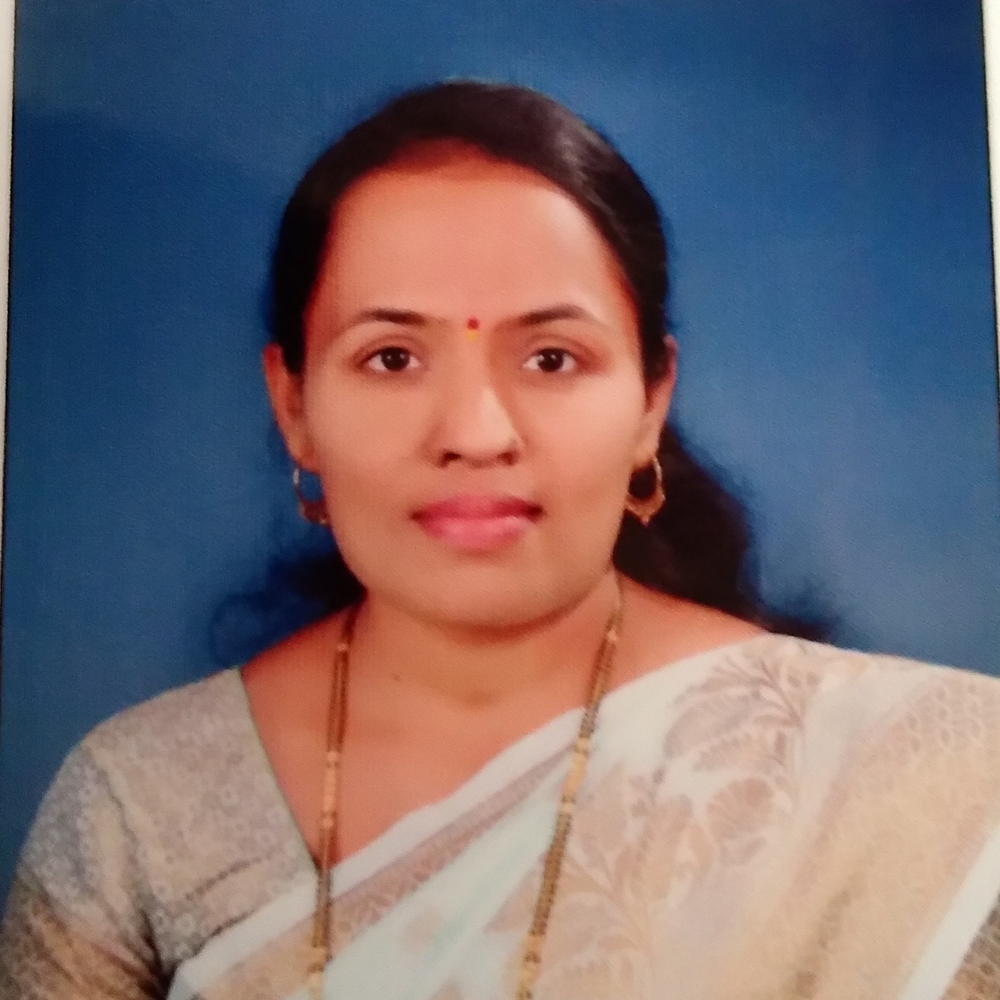

Shree. Chandrashekhar Kulkarni
Honourable Headmaster
B.Sc., B.Ed
More than 45 years of experince of teaching Maths.
Mr. Bashirun Mulla
Head of Secondary Department
M.A., B.Ed
More than 14 years of experince of teaching in कौतुक.

Mrs. Yogita Vani
Honourable
B.A.(english), B.Ed
More than 14 years of experince of teaching
Social Science & English.
Mrs. Tejaswini Jadhav
Head of Primary Department
B.A., D.Ed
12 years of experince of teaching in
कौतुक.
Shrimati. Sangita Shirole
Head of Pre-Primary Department
B.A.
20 years of experince of teaching in
कौतुक.
Vision
To develop Self-dependant, Versatile,
Innovative, Creative, Quality conscious
students for betterment of society.
Mission
1. To serve quality education in minimum fees in rural areas like Shiroli, Herle and others.
2. To develop "Never Give Up." attitude in students.
3. To make students ready for their future.
4. To guide students for better career for them.
5. To prepare students for International Level.
6. To teach students the value of Freedom, Equality, Fraternity and Honesty.
Our Features
1. Semi-English from kinder-garden to 10th class.
2. The only school teaching Sanskrit with Semi-English.
3. Preparation for competitive exams from 1st standard.
4. Building strong base of Maths and other subjects in kinder-garden with activities like Handcrafting,Sports,Painting and much more...
5. Kinder-garden curriculum deals with practical life.
6. Internal evaluation of student through direct participation of parents. It was also noticed by other reputed schools.
7. Transparent transactions, well-educated directors and successful permanent members in various fields.
8. Always encouraging extra reading, singing, music, oratory,handicrafts, painting, chess, abacus, market knowledge and home visits.
9. Encouraging,entrepreneurial and creative teachers.
10. Quality alumni are today's successful citizens on their own